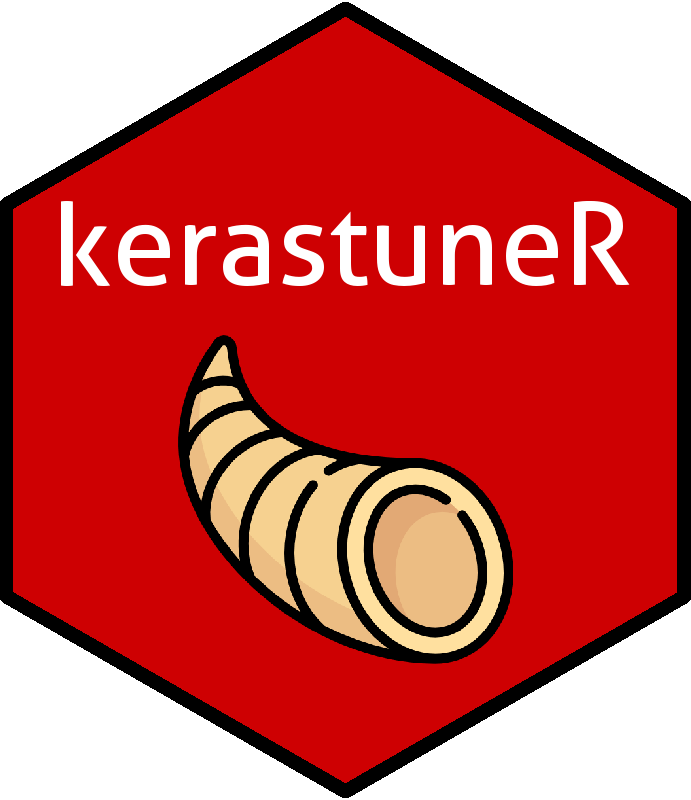

R interface to Keras Tuner
The kerastuneR package provides R wrappers to Keras Tuner.
Keras Tuner is a hypertuning framework made for humans. It aims at making the life of AI practitioners, hypertuner algorithm creators and model designers as simple as possible by providing them with a clean and easy to use API for hypertuning. Keras Tuner makes moving from a base model to a hypertuned one quick and easy by only requiring you to change a few lines of code.



A hyperparameter tuner for Keras, specifically for tf$keras with TensorFlow 2.0.
Full documentation and tutorials available on the Keras Tuner website.
Installation
Requirements:
- Python 3.6
- TensorFlow 2.0
Currently, the package is available on github:
devtools::install_github('henry090/kerastuneR')Later, you need to install the python module kerastuner:
kerastuneR::install_kerastuner()Usage: the basics
Here’s how to perform hyperparameter tuning for a single-layer dense neural network using random search.
First, we define a model-building function. It takes an argument hp from which you can sample hyperparameters, such as hp$Int('units', min_value = 32, max_value = 512, step = 32) (an integer from a certain range).
Sample data:
x_data <- matrix(data = runif(500,0,1),nrow = 50,ncol = 5)
y_data <- ifelse(runif(50,0,1) > 0.6, 1L,0L) %>% as.matrix()
x_data2 <- matrix(data = runif(500,0,1),nrow = 50,ncol = 5)
y_data2 <- ifelse(runif(50,0,1) > 0.6, 1L,0L) %>% as.matrix()This function returns a compiled model.
library(keras)
library(kerastuneR)
library(dplyr)
build_model = function(hp) {
model = keras_model_sequential()
model %>% layer_dense(units = hp$Int('units',
min_value = 32,
max_value = 512,
step= 32),input_shape = ncol(x_data),
activation = 'relu') %>%
layer_dense(units = 1, activation = 'softmax') %>%
compile(
optimizer = tf$keras$optimizers$Adam(
hp$Choice('learning_rate',
values=c(1e-2, 1e-3, 1e-4))),
loss = 'binary_crossentropy',
metrics = 'accuracy')
return(model)
}Next, instantiate a tuner. You should specify the model-building function, the name of the objective to optimize (whether to minimize or maximize is automatically inferred for built-in metrics), the total number of trials (max_trials) to test, and the number of models that should be built and fit for each trial (executions_per_trial).
Available tuners are RandomSearch and Hyperband.
Note: the purpose of having multiple executions per trial is to reduce results variance and therefore be able to more accurately assess the performance of a model. If you want to get results faster, you could set executions_per_trial=1 (single round of training for each model configuration).
tuner = RandomSearch(
build_model,
objective = 'val_accuracy',
max_trials = 5,
executions_per_trial = 3,
directory = 'my_dir',
project_name = 'helloworld')You can print a summary of the search space:
tuner %>% search_summary()Then, start the search for the best hyperparameter configuration. The call to search has the same signature as model %>% fit(). But here instead of fit() we call fit_tuner().
tuner %>% fit_tuner(x_data,y_data,
epochs = 5,
validation_data = list(x_data2,y_data2))Plot results
There is a function plot_tuner which allows user to plot the search results. For this purpose, we used the parallel coordinates plot from plotly. This function allows to get a data.frame of the results, as well.
result = kerastuneR::plot_tuner(tuner)
# the list will show the plot and the data.frame
result 
You can easily restrict the search space to just a few parameters
If you have an existing hypermodel, and you want to search over only a few parameters (such as the learning rate), you can do so by passing a hyperparameters argument to the tuner constructor, as well as tune_new_entries=FALSE to specify that parameters that you didn’t list in hyperparameters should not be tuned. For these parameters, the default value gets used.
library(keras)
library(kerastuneR)
library(dplyr)
mnist_data = dataset_fashion_mnist()
c(mnist_train, mnist_test) %<-% mnist_data
rm(mnist_data)
mnist_train$x = tf$dtypes$cast(mnist_train$x, 'float32') / 255.
mnist_test$x = tf$dtypes$cast(mnist_test$x, 'float32') / 255.
mnist_train$x = keras::k_reshape(mnist_train$x,shape = c(6e4,28,28))
mnist_test$x = keras::k_reshape(mnist_test$x,shape = c(1e4,28,28))
hp = HyperParameters()
hp$Choice('learning_rate', c(1e-1, 1e-3))
hp$Int('num_layers', 2L, 20L)
mnist_model = function(hp) {
model = keras_model_sequential() %>%
layer_flatten(input_shape = c(28,28))
for (i in 1:(hp$get('num_layers')) ) {
model %>% layer_dense(32, activation='relu') %>%
layer_dense(units = 10, activation='softmax')
} %>%
compile(
optimizer = tf$keras$optimizers$Adam(hp$get('learning_rate')),
loss = 'sparse_categorical_crossentropy',
metrics = 'accuracy')
return(model)
}
tuner = RandomSearch(
hypermodel = mnist_model,
max_trials = 5,
hyperparameters = hp,
tune_new_entries = T,
objective = 'val_accuracy',
directory = 'dir_1',
project_name = 'mnist_space')
tuner %>% fit_tuner(x = mnist_train$x,
y = mnist_train$y,
epochs = 5,
validation_data = list(mnist_test$x, mnist_test$y))
You can use a HyperModel subclass instead of a model-building function
This makes it easy to share and reuse hypermodels.
A HyperModel subclass only needs to implement a build(self, hp) method.
library(keras)
library(tensorflow)
library(dplyr)
library(kerastuneR)
x_data <- matrix(data = runif(500,0,1),nrow = 50,ncol = 5)
y_data <- ifelse(runif(50,0,1) > 0.6, 1L,0L) %>% as.matrix()
x_data2 <- matrix(data = runif(500,0,1),nrow = 50,ncol = 5)
y_data2 <- ifelse(runif(50,0,1) > 0.6, 1L,0L) %>% as.matrix()
HyperModel <- reticulate::PyClass(
'HyperModel',
inherit = kerastuneR::HyperModel_class(),
list(
`__init__` = function(self, num_classes) {
self$num_classes = num_classes
NULL
},
build = function(self,hp) {
model = keras_model_sequential()
model %>% layer_dense(units = hp$Int('units',
min_value = 32,
max_value = 512,
step = 32),
input_shape = ncol(x_data),
activation = 'relu') %>%
layer_dense(as.integer(self$num_classes), activation = 'softmax') %>%
compile(
optimizer = tf$keras$optimizers$Adam(
hp$Choice('learning_rate',
values = c(1e-2, 1e-3, 1e-4))),
loss = 'sparse_categorical_crossentropy',
metrics = 'accuracy')
}
)
)
hypermodel = HyperModel(num_classes = 10)
tuner = RandomSearch(hypermodel = hypermodel,
objective = 'val_accuracy',
max_trials = 2,
executions_per_trial = 1,
directory = 'my_dir5',
project_name = 'helloworld')
Documentation, advanced model tuning, and tutorials can be found on https://henry090.github.io/kerastuneR/